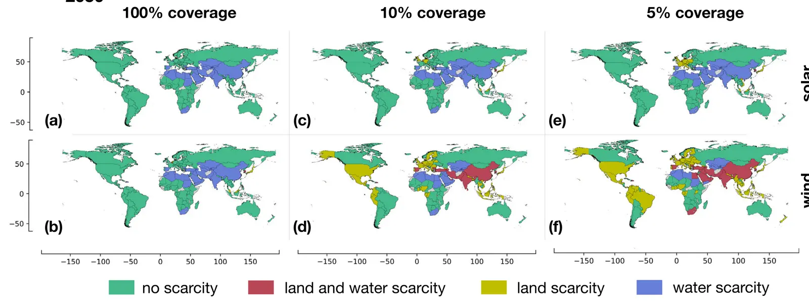

Global land and water limits to electrolytic hydrogen production using wind and solar resources
Key finding. Setting a country-by-country 2050 hydrogen demand against national land and water availability, less than 50% of that demand could be met by local production without land or water scarcity — the exact share depending on how much land is allocated to solar panels or wind turbines.

What question did this research address?
Net-zero plans lean on a large scale-up of electrolytic hydrogen. Making it takes electricity, which takes land for panels and turbines, and it takes freshwater as feedstock — both of which are already contested in many countries.
This paper asked which countries could actually produce their own hydrogen within their own land and water endowments, and which would have to import.
What did we find?
A reference scenario for 2050 hydrogen demand is built country by country, then compared against each country's land and water availability rather than against a global total.
The headline share is sensitive to a policy choice, not just to geography: how much land a country is willing to allocate to solar or wind determines how much of its hydrogen it can make at home.
The analysis identifies which countries are constrained by their own natural resources from reaching electrolytic hydrogen self-sufficiency under a net-zero target.
Land and water abundance marks out the likely exporters — Southern and Central-East Africa, West Africa, South America, Canada and Australia.
The same result can be read as trade in industry rather than in hydrogen. A country short of land and water can import the hydrogen, or it can export the industries that would have consumed it.
Why does it matter?
It converts hydrogen from an energy question into a land and water question. Electrolysis is usually costed in dollars per kilogram; this shows the binding constraint for many countries is physical endowment, which no cost reduction relieves.
The "import hydrogen or export the industry" framing is the consequential one. It means the geography of heavy industry is at stake in how the hydrogen economy is built, not merely the geography of fuel supply.
It also names a new set of resource exporters that does not map onto today's energy exporters, which has the same strategic implications as the shift from fuels to materials.
Citation
Davide Tonelli, Lorenzo Rosa, Paolo Gabrielli, Ken Caldeira, Alessandro Parente, and Francesco Contino (2023). Global land and water limits to electrolytic hydrogen production using wind and solar resources. Nature Communications 14, 5532.
Related
- What would it take for the energy system to stop changing the climate?
- Utilizing curtailed wind and solar power to scale up electrolytic hydrogen production in Europe (Ganter et al., 2025)
- Opportunities and constraints of hydrogen energy storage systems (Dowling et al., 2024)
- Trade risks to energy security in net-zero emissions energy scenarios (Cheng et al., 2025)